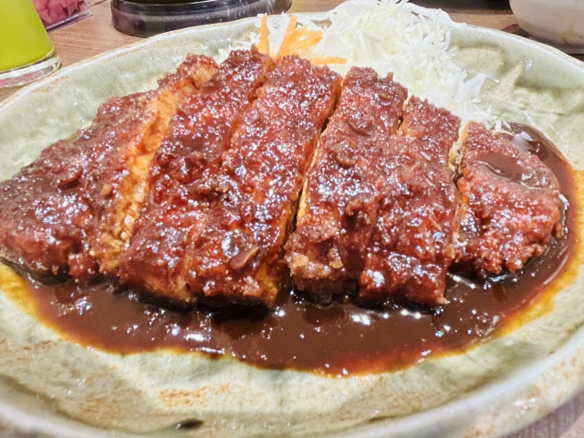

Must Eat

Food is the best part of Nagoya. The most famous food in Nagoya is misokatsu. Yabaton is the most famous misokatsu place in Japan. Katsu is deep-fried pork, which is ordinary Japanese food. Since Nagoya is famous for miso, which is soy-bean paste, katsu coated in miso sause is iconic food in Nagoya.